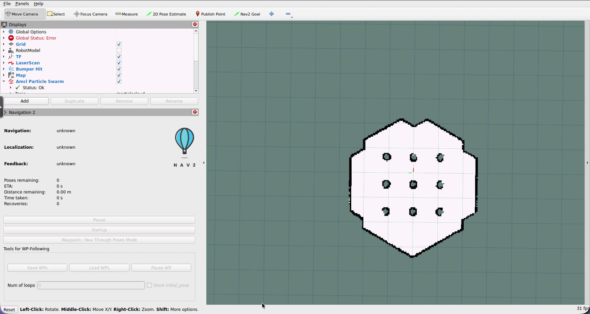
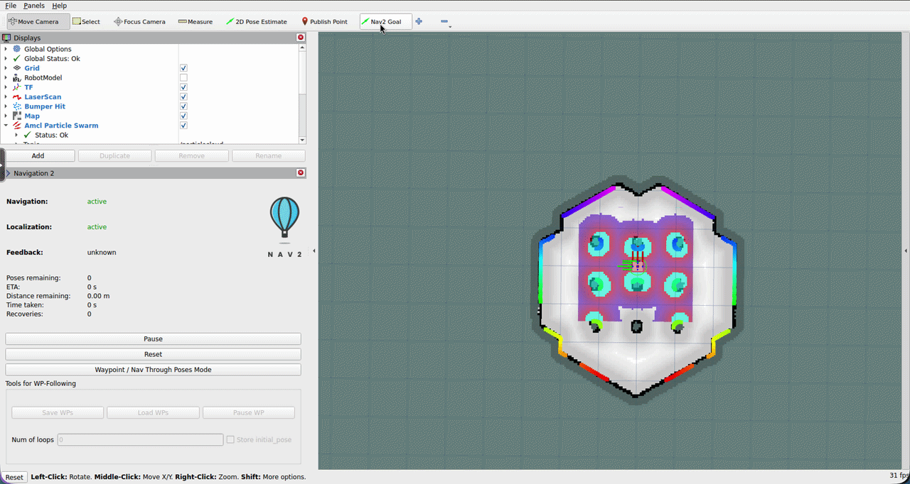

Navigation¶
What Is Autonomous Navigation?¶
Autonomous navigation is the ability for a robot to move from where it is to where you want it to be, without you driving it every step of the way. You give it a goal, and it figures out the path, avoids obstacles along the way, and gets there.
linorobot2 uses Nav2, the standard navigation stack for ROS2. Nav2 handles all the complex pieces: global path planning, local obstacle avoidance, localization within the map, and recovery behaviors when things go wrong.
How Nav2 Works¶
Nav2 is a collection of servers that work together:
- AMCL (Adaptive Monte Carlo Localization): Localizes the robot within the map by comparing the current laser scan against the known map. Publishes the
map → odomtransform. Requires an initial pose estimate to start. - Global Planner: Plans an optimal path from the robot's current position to the goal, using the global costmap (the static map plus known obstacles).
- Local Controller: Generates velocity commands that follow the global path while avoiding immediate obstacles using the local costmap (a small window around the robot, updated in real time).
- Costmaps: The global and local costmaps layer obstacle information and inflation zones around obstacles so the robot plans paths that keep it safely away from walls.
- Behavior Tree: Orchestrates the whole process, replanning when the path is blocked and executing recovery behaviors (spinning, backing up) when the robot gets stuck.
Configuration¶
Nav2 is configured in linorobot2_navigation/config/navigation.yaml. The defaults work well out of the box. For advanced tuning (adjusting the planner algorithm, controller parameters, or costmap layers), refer to the Nav2 configuration guides.
Important: Set Your Robot's Footprint¶
The one parameter you must configure for your specific robot is the footprint, which is the physical size of your robot. Nav2 uses this to ensure the robot doesn't plan paths that would cause it to collide with walls or obstacles.
By default, navigation.yaml uses a circular approximation with robot_radius: 0.22 (22 cm). Find this in both local_costmap and global_costmap sections:
Option 1: Update the radius. Set robot_radius to the radius of a circle that fully encompasses your robot. Use the largest dimension (usually half the diagonal).
Option 2: Use a precise polygon footprint. For non-circular robots, replace robot_radius with a footprint parameter that defines the robot's exact outline as a list of [x, y] vertices:
local_costmap:
local_costmap:
ros__parameters:
footprint: "[[0.21, 0.195], [0.21, -0.195], [-0.21, -0.195], [-0.21, 0.195]]"
Set the same footprint in global_costmap as well. Vertices are in meters, relative to base_link (robot center). List them in order around the perimeter.
For detailed guidance on measuring and setting the footprint, see the Nav2 footprint setup guide.
After changing navigation.yaml, rebuild the workspace:
Launch the Navigation Software Components¶
You need a map saved from the Mapping step before proceeding.
Physical Robot¶
Terminal 1: Launch the Physical Robot bringup
Terminal 2: Launch Nav2:
Terminal 3: Visualize (from Workstation):
Simulated Robot¶
Terminal 1: Launch the Simulated Robot bringup, including Gazebo
Terminal 2: Launch Nav2:
ros2 launch linorobot2_navigation navigation.launch.py map:=<path_to_map>/<map_name>.yaml sim:=true rviz:=true
Setting the Initial Pose¶
When Nav2 starts, AMCL doesn't know where the robot is in the map. You must tell it.
Nav2 will start and print Timed out waiting for transform from base_link to map. This is normal. It means AMCL is waiting for the robot's initial pose before it can publish the map → odom transform.
In RViz, click "2D Pose Estimate" in the toolbar, then click on the map where the robot actually is and drag in the direction the robot is facing. You should see the laser scan snap into alignment with the walls on the map, which confirms AMCL has correctly localized the robot.
If the scan doesn't align, try setting the pose estimate again. The particle filter needs a few seconds to converge; drive the robot slowly for a moment to help it localize.

Sending Navigation Goals¶
Once the robot is localized, you can send it anywhere on the map:
In RViz, click "2D Goal Pose", then click on the map where you want the robot to go and drag to set the desired final orientation.
Nav2 will:
- Plan a path from the current position to the goal
- Begin following the path
- Avoid any new obstacles detected along the way
- Declare success when it arrives within the goal tolerance (default: 35 cm)

For a detailed walkthrough of the RViz navigation interface, see the Nav2 tutorial on Physical Robot navigation.
Troubleshooting¶
Invalid frame ID "map" errors: Nav2 is running but AMCL hasn't localized yet. Set the 2D Pose Estimate in RViz.
Robot drives into walls: The footprint is too small. Increase robot_radius or widen the polygon footprint.
Robot refuses to move toward a goal: The costmap inflation radius may be too large for tight spaces. Check inflation_radius in navigation.yaml.
Robot gets stuck spinning: This is a recovery behavior. It happens when the local planner can't find a clear path. Try clearing the costmaps or sending a different goal.
Changes to navigation.yaml don't take effect: Rebuild the workspace with colcon build and relaunch.